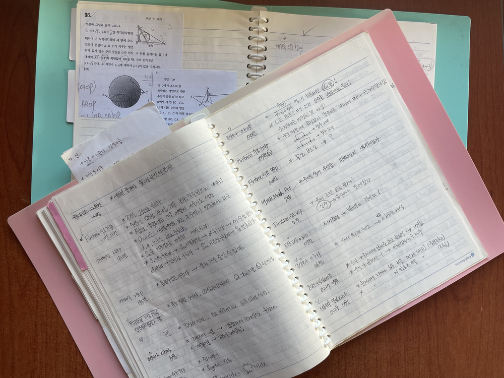
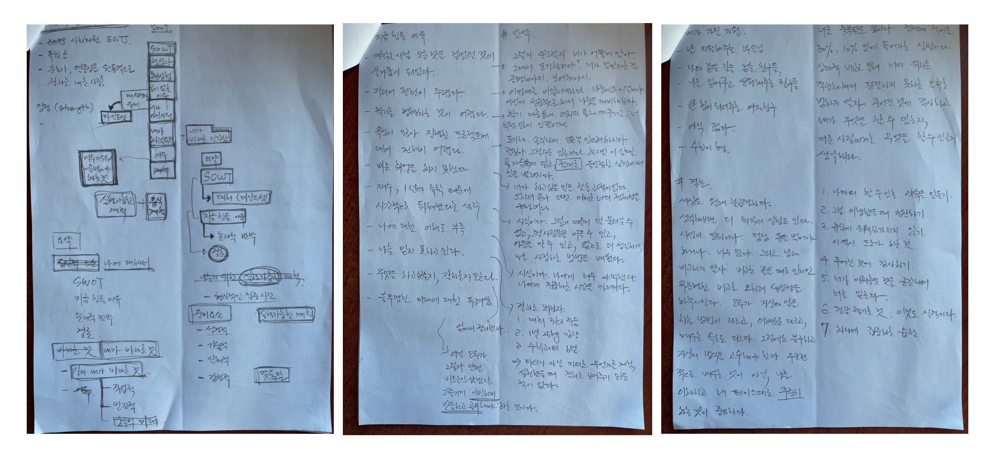

학창시절
어릴 적 똑똑한 아이로 알려졌던 나는, 오히려 중학교, 고등학교를 가면서 좌절을 맛봤다. 머리가 좋은 줄 알았는데 그게 아니었다. 경기도 권에서 시험을 보고 들어올 정도로 좋은 고등학교를 진학한 이후, 같은 시간을 쏟아도 다른 성적이 나오는 것을 보면서 이전에 받았던 그 기대에 부응하지 못한다는 생각이 누적된 스트레스로 찾아왔다. 무엇이 문제인지에 대해서 제대로 마주하는 것이 두려웠고, 그렇게 공부를 하는 척만 하는 의미없는 반복을 되풀이 했다. 그리고 원하던 대학에 진학하지 못했다. 내 주변에 모두가 의대, 치대, 한의대, SKY, 인서울을 하는 와중, 내가 지원했던 모든 학교는 나를 거절했다.
재수
여전히 이런 나를 믿어주시는 감사한 부모님을 둔 덕분에, 한번의 기회를 더 가질 수 있었다. 높은 학원비에도 불구하고 재수학원을 등록해주셨다. 입과하기 전에 방에 누워있던 도중 눈물이 났다. 할줄 아는 것이 아무 것도 없었다. 말을 잘하는 것도 아니고, 공부를 잘하는 것도 아니고, 스트레스로 인한 폭식 때문에 100kg에 육박해 있었다. 거울을 보는 것도 싫었다. 아무것도 없으면서 같잖은 자존심만 부리는 내 모습이 보였다. 내가 너무 싫었다. 왜 대학을 가야하는 지도 몰랐다.
그리고 혼자서 오랜시간 고민했다. 내가 가지고 있던 모든 것에 대해 질문하고 답을 하는 시간을 마련했다. 왜 대학을 가야할까, 왜 나는 말을 못할까, 왜 살이 찔까. 조바심과 압박감이 내 삶을 이렇게 만들었다는 결론이 났다. 항상 누군가와 남을 비교하고, 내 줏대없이 그 사람이 하는 것을 따라하면 되겠지와 같은 타향에 젖어 행동했다. 맞다. 나는 내가 왜 하고 있는지에 대해서도 잘 몰랐다.
그리고 본질적으로 내가 하고 싶은 것이 무엇인지 고민했다. 대학 이런 것은 진정으로 내가 하고 싶은 것이 아니었다. 이제 남의 말을 듣기보다는 내 안의 소리를 듣기로 했다. 보다 본질적인 동기를 찾고 싶었다. 내가 원하는 것은 총 3가지 였다.
- 살을 빼고 싶다.
- 내가 좋아하지만 가장 못하는 “수학”에서 고액 과외를 하여 원하는 만큼 돈을 써보고 싶다.
- 누구나 아는 대학에서 으스대보고 싶다.
내가 알게 모르게 뽐내기 좋아하는 성격이라는 것을 알았다. 그리고 이 모습이 되기 위해 내가 무엇이 필요한지 고민했다. 여러 방법이 있겠지만 대부분의 문제의 답은 본질적이다.
- 하루에 아침 한끼만 1년동안 먹는다. 저녁 30분 HIIT 한다.
- 배운 내용과 틀린 내용에 대해서 “절대” 까먹지 않는다.
- 2번의 전략을 모든 과목에 적용한다.
그리고 나는 배수진을 쳤다. 뚜렷한 목표에 대해 완벽한 계획을 세웠으나, 성공하지 못하면 그건 너가 실천하지 않았기 때문이고, 그렇다면 지금의 너의 모습에 대해 군말없이 살기로. 그 책임은 오롯이 내가 지겠다는 다짐을 했다.
그리고 해냈다. 수능 수학 만점, 25kg 감량, 대학 합격
15.02 목표 달성의 시작을 도와준 노트
대학
나의 속도, 강점, 약점, 이겨내는 법 등을 배우면서 앞으로의 삶 역시 비슷하지 않을까라는 생각을 했다. 그리고 어느 정도는 맞았다. 그리고 재수를 하여 대학에 들어온 나는, 다시는 그렇게 뒤쳐지는 경험을 하지 않겠다는 마음을 먹었다. 빠른 취업이라는 목표를 두고 하루하루를 살았다. 물론 누구보다 놀기도 잘 놀았다. 하지만 어느 순간 잊고 있었던 컴퓨터에 대한 호기심이 “알파고”를 계기로 터지게 되었고, 그 때부터 약간은 목적없는 삶을 살았다.
데이터 분석이라는 것을 공부하게 되면서 코딩을 접했다. 주말에 10-18시까지 어려운 수식과 코드를 짜면서 공부를 했던 기억이 난다. 제대로된 목표설정을 하지는 않았지만 어려운 공부를 하니 잘될 것이라는 막연한 생각을 했다. 하지만 1년동안 준비한 것의 결과는 생각보다 좋지 않았다. 곰곰히 성찰한 결과, 어떤 결과를 내기 위해 치열하게 도전했다는 생각이 들지 않았다. 그리고 내가 쏟은 이 1년이라는 시간이 헛되지 않았다는 것을 증명하기 위해 3개 정도의 대회에 나가 수상을 하겠다는 목표를 세웠다. 과감하게 휴학을 했고, 좋은 팀원들과 함께 죽을 둥 살둥 하면서 결과를 만들었다.
또 이대로라면 찬란한 미래가 보일 줄 알았다. 하지만 여전히 그렇지 않았다. 기계공학과를 시작으로 소프트웨어 융합학과를 복수전공한 나는 어느 길로 나가야 할지 고민이 많았다. 내 정체성에 혼란이 왔다. 나는 무엇을 더 좋아하지? 나는 무슨과에 속해있는 걸까. 실제로 두과 모두에서 진득하게 속해있는 사람이 아니었기 때문에 속으로는 외로움도 컸다. 그래서 같이 나간 대회 팀원들에게 보다 의지하고 그랬던 것 같다. 미안하다.
어릴적 네이버에서 주관하는 코딩 캠프?에 참가한 적이 있다. 고등학생때였는데, 네이버 사옥에 압도된 기억이 있다. 그리고 소개 영상을 보곤 부모님께 가서 나 대학안가고 이거 하겠다라고 말한 적이 있다. 등짝을 맞았던 기억도 있다. 그런데, 내 정체성에 대한 고민을 하면서 어떻게 보면 결국 내가 원했던 방향으로 내가 가고 있다는 것을 깨달았다.
이제 그렇다면 기계과는 접어두고, 내가 열중했던 데이터 분석, ML에 관련해서 취업 준비를 해야겠다는 생각을 했다. 그런데 이게 왠걸. 내가 했던 데이터 분석은 약간은 문과스러운 업무에 가까웠다. 실제로 이를 사용하기 위해서는 ML지식, 백엔드 지식이 너무나도 중요했다. 그리고 이 상황에서 경쟁을 하기 위해서 내 현재 상태는 너무 초라했다. CS 지식 부족, 알고리즘 풀이 능력 부족, 업무와 상관없는 수상이력 등. 가장 중요한 건 내가 데이터 분석을 하면서, 내가 하고싶은 일이 이것이 아니었다는 점이다.
그래서 또 도전한 것이 겨울방학때 진행했던 창업 교육이다. 어릴 때 부터 창업자들에 대한 동경이 있었고, 이번 기회가 아니라면 이런 교육을 들어볼 기회가 없다고 생각했다. 그리고 수상도 했다. 어쩌다 보니 팀도 꾸렸고, 진행했다. 하지만 결국은 내 능력 부족, 의지 부족, 삶에 대한 불안함, 개발 실력 부족등의 문제로 해체되었다. 내 책임을 지키지 못하는 것이 얼마나 가슴아프고 비참한 일인지 깨닫게 되었다. 사람은 결과로 승부해야 한다는 점을 배울 수 있었다.
물거품된 2년동안 준비했던 대회 수상 경력, 애매한 과, 자격증 전무, 개발 경험 없음, 부족한 CS 지식, 부족한 알고리즘 실력. 이게 3년 동안의 내 대학 생활의 결과물이었다. 누구보다 탄탄히 준비하여 빠르게 목표를 이루고 싶었던 내 마음과 달리, 결과는 좋지 않았다. 동기들은 모두 취업한 상황이었고 난 무엇이 어디부터 잘못된 건지 찾고 싶었다. 다시 지난 재수시절이 떠올랐고, 내 인생 암흑시기로 들어간 기분이 들었다.
다시 도전
4학년 1학기, 첫번째 논문을 제출하고 지친 나는 내가 무엇을 하고 싶은지에 대해 다시 고민했다. 재수 시작 시절과 데자뷰였다. 가장 힘들었던 것은, 그 많은 노력이 소용 없게 된 상황자체를 받아들이고 인정해야 했다. 내가 초라한 상태라는 것을 받아들여야 했다. 내가 원하는 이상향과 멀어졌다는 것을 수긍해야했다. 너무 싫었다. 그렇게 하고 싶지 않았던 것을 다시하고 있다는 것이 몸서리치게 싫었다.
내 강점은 무엇일까. 무엇을 못할까. 내가 고민하고 있는 것들은 무엇인가. 내가 나아가지 못하는 이유는 무엇일까. 내가 불안한 이유는 무엇일까. 그리고 그것에 대해 하나하나 논리적으로 반박했다.
21.06 나에 대한 성찰을 하며
그리고 다행히 내가 가진 기회가 있었다.
- 복수 전공 계획을 잘짜두어 막학기 1개의 교양만이 남아있었다.
- 코로나 시국이라 수업을 집에서 들을 수 있었다.
- 아는 개발자 분이 계셔서 질문할 수가 있었다.
앞에서도 말했지만 비교적 뽐내기 좋아하는 내 성격에 시각적인 것이 보다 맞겠다는 생각을 했다. 항상 발표를 진행했고 주도적인 성격인 탓에, 개발 공부를 하더라도 서비스의 최전선에서 내가 활동해야 좋을 것 같다는 생각을 했다. 그런데 웹을 잠깐 해보면서 느낀 것은, 일단 재미가 없었다. 잘 하지도 못하면서 재미가 없는 것으로 시작해서 성공할 가능성이 적다 생각했다. 내가 가장 좋아하는 제품군인 애플 생태계에서 시작해야겠다는 생각을 하고 공부방법을 찾기 시작했다.
처음으로 글을 썼던 것이 생각난다. 6개월 iOS 개발자 프로젝트 시리즈를 만들고, 매일 매일 글을 썼다. 그러면서 느낀 것은 iOS 의 경우 무엇을 공부해야 하는지에 대해 제대로 알기가 어려웠다는 점이다. 부스크 코스를 통해 입문했지만, 때때로 모르는 부분도 많았고, 내가 알고 하는 건지에 대해 의문이 들었다. 그래서 가장 빠르게, 가장 빡세게, 가장 좋은 교육 프로그램이 무엇이 있는지 찾아보다, 부스트 캠프를 접하게 되었다.
부스트 캠프 챌린지
두번의 코딩테스트를 빡세게 준비한 결과, 운이 좋게도 부스트 캠프에 입과할 수 있게 되었다. 그리고 이 기회가 나는 하늘이 줄 기회라 생각하고 하나의 다짐을 세웠다.
- 내가 다른 사람들보다 지식적으로 부족할지 몰라도, 1등을 목표로 하겠다.
이 목표를 이루기 위해 밥만 먹고 코딩만 했다. 일단 멤버십 과정까지 가야 비로소 실무적 역량을 키울 수 있었기에 절박함을 기반으로 죽도록 했다. 모든 요구사항을 만족시키려 최선을 다했고, 약 80%의 요구사항은 평균적으로 달성했다. 아침마다 하는 피어 세션에서의 내용은 내가 모르는 것은 모두 적어서 모두 적용하기 위해 남은 시간을 사용했다. 이런 작업은 보통 주말에 진행했으며, 모르는 내용도 블로그에 글로 작성했다.
그리고 원하는 다음 목표였던 부스트 캠프 멤버십에 합격할 수 있었다.
부스트 캠프 멤버십
멤버십 합격 이후에는 하나의 목표가 추가되었다.
- 네트워킹 기업 어느곳에서도 나를 데려가고 싶도록 만들겠다.
그러기 위해서는 코드를 작성하는데 있어서 많은 고민이 묻어나야 한다고 생각했다. 배우는 디자인 패턴, 기술등에 대해서 어떻게든 적용하고자 했다. 내용이 너무 어려워서, 팀원들을 모집해서 스터디를 만들어 진행했다. 7년간의 과외를 진행하면서, 누군가에게 공유하고 기쁨을 주었을 때, 내가 가장 동기부여가 되고, 또 가장 학습효과가 높다는 것을 배울 수 있었다. 그래서 스터디를 구성하여 주마다 하나이상의 세션에서 배운 내용에 대해 공유했다.
또한 팀에서의 내 역할에 대해서도 고민했다. 보통 문제에 대해 어떠한 방법으로든 결과를 만들어내는 것이 중요한 사람으로써 의견 충돌이 최소한으로 발생하는 팀 구성이 나에게 좋을 것이라 생각했다. 그리고 결과를 내는 것을 연습하면서, 구현, 부르트 포스와 같은 알고리즘 유형에도 대응이 가능할 것이라 생각했다. 팀을 구성하면서 중요하게 생각한 점은 다음과 같다.
- 내가 부족한 소통 능력을 커버해줄 접착제 같은 사람이 필요하다.
- 논리적으로만 생각하는 내게 부족한 감성적인 면이 있는 사람이 필요하다. (서비스 기획까지 들어가기 때문)
- 문제 해결에 있어서 함께할 문제 해결사가 필요하다.
다행히 스터디원이 이런 요구사항에 꼭 맞았고, 팀을 제안했다. 다행히 한 팀으로 활동할 수 있었다. 우리 팀 모두가 잘되었으면 좋겠다는 진심이 있었다. 내가 조금더 일을 하더라도 완벽하게 만들어 둔다면 나중에도 우리가 기분좋게 만나지 않을까라는 생각에서.
우리는 5주만에 다음과 같은 목표를 이뤘다.
- 앱스토어 배포
- MVVM 아키텍쳐 적용
- 서드파티 프레임워크 사용하지 않음
- 화면 13개
- 의존성 주입에 대한 심도있는 고민
- 이미지 캐시 구현
- 디자인
21.12 나의 첫 앱스토어 배포
네이버 지원
알고리즘 대비를 위해 지원한 네이버에서 2.5문제를 풀고 운이 좋게 합격했다. 1차 2차 면접을 준비하면서 프로젝트까지 진행해야 한다는 것이 큰 부담이었다. 하지만 공동의 책임이 보다 우선순위가 높다는 생각에 빠르게 일을 처리하기 위해 노력했다. 마음씨 좋은 팀원들을 만난 덕에 하루 이상 휴가를 내주어 3일의 시간을 가질 수 있었다. 면접을 보고 나서 느낀 것은, 문제 해결 능력이 중요하다는 것이다. 이를 높히기 위해서는 어떤 팀프로젝트, 과제를 받든 간에, “결과”를 내기 위한 노력이 중요한 듯하다. 평소부터 어떻게든 나는 결과를 내겠다와 같은 생각을 가지게 된다면, 보다 이런 부분에 대해 쉬운 사고를 할 수 있지 않을까.
2차 면접에서는 정말 떨어질 줄 알았다. 기술 질문에 대해 명확한 답을 하지 못했고, 내가 많이 부족하다는 것을 많이 느꼈다. 하지만..
21.12 목표 달성
정말 운이 좋게 합격할 수 있었다.
회고
지난 6개월, 부스트 캠프를 진행하면서 정말 내가 할 수 있을까에 대해서 수십번도 고민이 들었다. 그래서 밤마다 되내였다. 난 할 수 있다. 정말로 난 할 수 있다. 아침마다 씻지도 않고 커피한잔 들고 오로지 집중할 수 있었던 것은 무엇보다 “간절”했기 때문이라 생각한다. 쉽게 변하지 않는 사람을 변하게 만드는 것은 이것 밖에 없다. 그리고 내 좌우명인 **“뚜렷한 목표, 치밀한 계획, 우직한 실천”**을 믿고 밀어붙여서이지 않을까. 마음 깊이 믿었던 6개월 iOS 개발자 되기 프로젝트를 성공했다.
아직 내가 바라는 이상향에는 멀지만, 내 판단이 맞음을 비로소 증명할 수 있다는 것에 가장 큰 성취와 만족을 느낀다.
이렇게 인생 1막을 마치면서 나를 되돌아보면, 낙심, 좌절, 극복, 성취의 연속이었다. 쿨타임이 주기적으로 돌면서 강한 성장의 모멘텀을 가져다 주었다. 오히려 이제는 좌절이라는 것이 그리 나쁘지만은 않은 것이 아닌가라는 생각도 든다. 그제서야 비로소 나를 객관적으로 바라보고, 다시 걸어갈 수 있으니까. 재부팅 느낌이다.
앞으로도 학창 시절, 재수, 대학, 취준 시기의 내 경험이 굉장히 중요한 자산이 될 것이라는 생각이 든다. 학창 시절, 낮은 자존감으로 인해 많은 고통을 받았었지만, 결국 해결은 행동을 바탕으로한 목적 달성밖에 없다. 이 점을 1막에서 배운 것이 가장 감사한 점이 아닐까.
지금까지 부족한 인간을 전적으로 서포트해주신 부모님과 주변 지인분들께 정말 감사드린다.
마지막으로, 어느날 분명 이 글을 읽고 있을 내게, 잠깐 숨 좀 돌리고 지금까지 걸어온 길에 대해 고민해보라 말해주고 싶다. 너는 이미 답을 알고 있어.